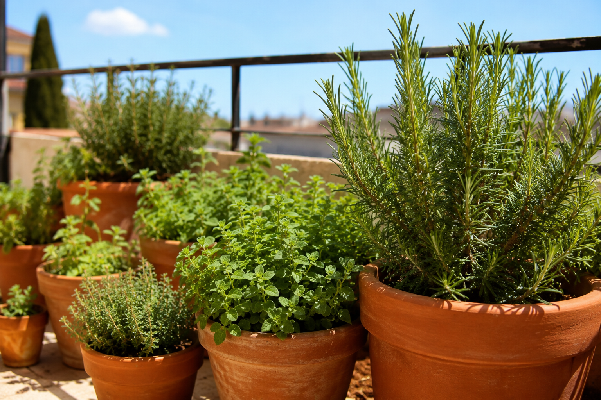

Hay una idea equivocada muy extendida: que se te dan mal las plantas. La verdad es casi siempre otra: eliges plantas que necesitan muchos cuidados y las riegas demasiado. Si quieres tener verde en el balcón sin sufrir, la solución es empezar por plantas que prosperan precisamente cuando las dejas en paz. Y casualmente, las más resistentes de todas son aromáticas mediterráneas que además dan sabor a tus comidas.
El secreto: estas plantas mueren de amor, no de abandono
Romero, tomillo, orégano y laurel vienen del clima mediterráneo: veranos secos, suelos pobres, mucho sol. Están diseñadas por la naturaleza para aguantar la sequía. Su principal causa de muerte en maceta no es la falta de agua: es el exceso de riego. Cuando las riegas a diario "por si acaso", encharcas la raíz, le quitas el oxígeno y se pudre. Si te olvidas de regarlas una semana, no pasa absolutamente nada.
Esto las convierte en las plantas perfectas para quien tiene poco tiempo, viaja, o simplemente se olvida. Riégalas solo cuando el sustrato esté seco del todo, y ya está.
Las cuatro imbatibles
🌿 Romero
Probablemente la más dura de todas. Aguanta meses sin agua, soporta el sol más fuerte y el frío moderado, y vive años. En maceta necesita poco: un tiesto de unos 10 litros, sol, y olvidarte de regar salvo cuando la tierra esté seca. De propina, florece en azul y atrae abejas.
🌿 Tomillo
Mediterráneo puro. Apenas necesita 5 litros de maceta y casi nada de agua. Es de las que más sufre con el exceso de riego, así que aquí menos es más. Perfecto para un rincón soleado de la barandilla.
🌿 Orégano
Crece casi solo. Muy resistente a la sequía, se expande con facilidad y produce hojas durante toda la temporada. Una sola planta te da orégano de sobra para todo el año si lo secas.
🌿 Laurel
Es un arbusto, así que necesita una maceta más grande (unos 30 litros), pero a cambio es casi eterno: dura años, aguanta sequía y frío moderado, y se puede podar para controlar su tamaño. Tener laurel fresco en casa cambia muchos guisos.
Para empezar con buen pie (productos verificados en Amazon):
Sustrato para aromáticas: Ligero y con buen drenaje, lo que estas plantas necesitan. 🛒 Ver en Amazon →
Macetas de barro con drenaje: El barro transpira y evita el encharcamiento, ideal para mediterráneas. 🛒 Ver en Amazon →
Tijeras de podar pequeñas: Para cosechar hojas y mantener la planta compacta. 🛒 Ver en Amazon →
🌱 Cuánto regar de verdad: estas aromáticas necesitan muy poca agua, alrededor del 3-6% del volumen de su maceta por riego, y solo cuando el sustrato está seco. Mucho menos que una lechuga o un tomate. Por eso es tan fácil pasarse.
Un aviso: cuidado con juntarlas mal
Puedes poner varias aromáticas mediterráneas juntas en una jardinera porque comparten necesidades (poco riego, mucho sol). Pero ojo: la menta y la hierbabuena son la excepción: son invasivas y necesitan más agua, así que van siempre en maceta aparte o se comerán el espacio de las demás. Si tienes dudas sobre qué combina con qué, la herramienta de compatibilidad te lo dice al instante.
Calcula los datos exactos para tu caso
Estas herramientas gratuitas te dan los números exactos para tu situación, sin registro:
← Volver a Consejos | Te puede interesar: Cómo cuidar la albahaca en maceta · 10 plantas fáciles para empezar